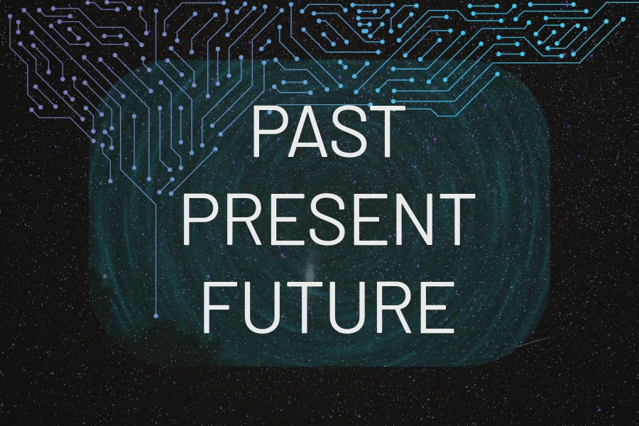
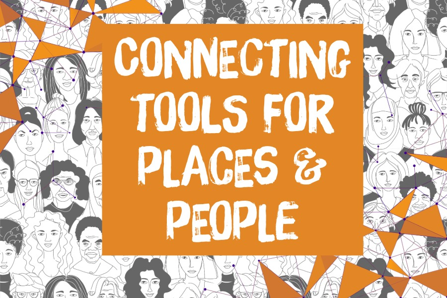
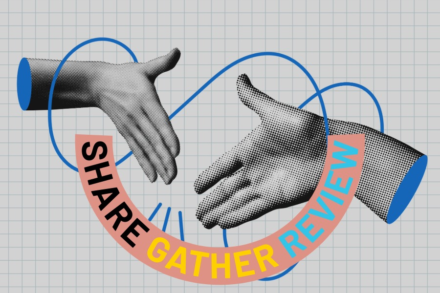

Session 1: Introduction to AI
Get started with AI in everyday life, learn what the programme is about, and begin recording ideas for your own community project. We will cover what AI is, types of AI and prompting.

Get started with AI in everyday life, learn what the programme is about, and begin recording ideas for your own community project. We will cover what AI is, types of AI and prompting.
Explore safe, ethical, and responsible AI use, including privacy, sustainability, trust, and checking outputs.

Continue to explore useful tools and shape your practical implementation that could help a group, place, project, or community need.

Review the project, improve elements, prepare first snapshots, reflect on what has been learned & share.
Course materials for registered participants will be shared through a controlled-access folder. This link requires a password which will be shared in class.
Across the four sessions, you will develop a practical idea that could help a group, place, project, or community need. This does not need to be a finished product. It can be a plan, prototype, workflow, poster, guide, website idea, or proposal.
The AI Literacy Challenge in Edinburgh is led by Edinburgh Futures Institute at the University of Edinburgh. The programme is designed as a supportive, practical space for exploring AI tools, asking questions, and developing ideas for community good.
A very big thank you to esteemed colleagues who engaged with early discussions, provided feedback on curricula design and practical implementations for the programme, Dr. Lucia Michielin learn more about Lucia's work (opens in a new tab) & Dr. Tomas Vancisin learn more about Tomas' work (opens in a new tab).
Thank you very much to Peter Bentley at the Edinburgh Futures Institute Makerspace who supported the programme with 3D printed materials and provided insightful input for participatory engagement, accessible learning & supporting diverse participant cohorts learn more about Peter's work (opens in a new tab).
Many thanks to The Grassmarket Community Project for joining us as the very first cohort for the AI Literacy Challenge. Your curiosity and insights were refreshing. Learn more about The Grassmarket Community project (opens in a new tab).
Many thanks to Vintage Vibes, Tinderbox Collective and The Heath FC (instagram) for collaborating with our course lead and submitting engaging mini-challenges for the course cohorts to work on during the programme. Learn more about each organisation by clicking on the names.
Base website template adapted from Editorial by HTML5 UP, licensed under Creative Commons Attribution 3.0. Original course content, page organisation, exercises, text, tasks and adapted learning materials © 2026 Somya Iqbal, University of Edinburgh / Edinburgh Futures Institute, unless otherwise stated. These original materials are shared under a Creative Commons Attribution-NonCommercial 4.0 International License. University names, logos, and marks remain the property of the University of Edinburgh and are not included under this Creative Commons licence.